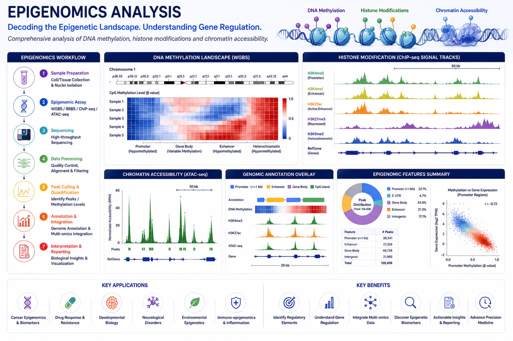

Epigenomics
AI-Powered Epigenomics Analysis Services for Gene Regulation, Chromatin Biology & Precision Medicine

RASA Life Science Informatics provides advanced Epigenomics analysis services that enable researchers to investigate gene regulation, chromatin accessibility, transcription factor activity, and epigenetic modifications underlying health and disease. Our comprehensive bioinformatics workflows support ChIP-Seq, ATAC-Seq, DNA Methylation Sequencing, Histone Modification Analysis, and Regulatory Genomics studies.
By integrating epigenomic, transcriptomic, and genomic datasets, we help pharmaceutical companies, biotechnology organizations, hospitals, CROs, research institutes, and academic laboratories uncover regulatory mechanisms, identify disease-associated epigenetic signatures, and accelerate biomarker discovery and therapeutic development.
Our scalable and reproducible pipelines support cancer epigenetics, immunology, neuroscience, developmental biology, stem cell research, rare diseases, and precision medicine programs.
Epigenomics Services
ATAC-Seq Analysis
Characterize chromatin accessibility and identify regulatory regions across the genome.
- ✓Peak calling and quality assessment
- ✓Differential accessibility analysis
- ✓Open chromatin identification
- ✓Regulatory element discovery
- ✓Motif enrichment analysis
- ✓Transcription factor activity prediction
ChIP-Seq Analysis
Map protein-DNA interactions and regulatory binding sites.
- ✓Peak detection and annotation
- ✓Histone modification analysis
- ✓Transcription factor binding analysis
- ✓Differential binding analysis
- ✓Genome-wide occupancy profiling
- ✓Regulatory network construction
DNA Methylation Analysis
Investigate epigenetic modifications associated with development, disease, and therapeutic response.
- ✓Differential methylation analysis
- ✓CpG island analysis
- ✓Methylation pattern profiling
- ✓Epigenetic biomarker discovery
- ✓Gene regulation studies
- ✓Clinical methylation analysis
Histone Modification Analysis
Explore chromatin states and regulatory mechanisms.
- ✓Histone mark profiling
- ✓Chromatin state characterization
- ✓Enhancer and promoter analysis
- ✓Epigenetic landscape mapping
- ✓Regulatory region annotation
Regulatory Genomics
Integrate epigenomic and transcriptomic data to understand gene regulation.
- ✓Gene regulatory network analysis
- ✓Multi-omics integration
- ✓Regulatory pathway analysis
- ✓Functional annotation
- ✓Biomarker discovery
Key Features
Deliverables
Epigenomic Analysis Outputs
Functional Analysis Outputs
Visualization & Reporting
Applications
Cancer Epigenomics
Identification of epigenetic drivers, biomarkers, and therapeutic targets in oncology.
Immunology Research
Analysis of immune cell regulation and chromatin accessibility.
Neuroscience
Investigation of epigenetic mechanisms involved in neurological disorders.
Stem Cell & Developmental Biology
Understanding cellular differentiation and developmental regulation.
Precision Medicine
Epigenetic biomarker discovery and patient stratification.
Drug Discovery
Identification of regulatory pathways and therapeutic targets.
Technologies & Platforms
ATAC-Seq & ChIP-Seq Analysis
DNA Methylation Analysis
Functional Annotation
Infrastructure
Representative Analysis Outputs
Chromatin Accessibility Profiling
Identification of open chromatin regions and regulatory elements.
Transcription Factor Analysis
Discovery of regulatory binding sites and transcriptional regulators.
DNA Methylation Profiling
Characterization of disease-associated methylation patterns.
Histone Modification Mapping
Analysis of chromatin states and epigenetic regulation.
Epigenetic Biomarker Discovery
Identification of diagnostic, prognostic, and therapeutic biomarkers.
Why Choose RASA?
Frequently Asked Questions
Ready to partner with a trusted bioinformatics company in India?
Get in touch with our team in Pune, India to discuss sample sizes, platform details, and custom bioinformatics pipeline configurations for your research program.
Start a Project